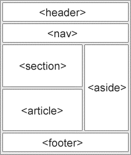

آموزش عناصر معنایی HTML5
اگر قسمت های قبلی آموزش html5 را دنبال کرده باشید تا اینجا با html5 و تفاوت های آن با html و عناصر جدید معرفی شده در این نسخه از html5 آشنا شده اید. اما همانطور که در قسمت دوم اشاره کردیم، در این قسمت می خواهیم در مورد عناصر معنایی html5 صحبت کنیم. با ما همراه باشید.
عناصر معنایی html5 در واقع چه هستند؟
همانطور که از نام آن ها پیداست، عناصر معنایی html5 به عناصری گفته می شود که دارای معنای مشخص باشند. یعنی این عناصر معنای مشخصی برای مرورگر و توسعه دهنده وب دارند. به زبان ساده تر عناصر غیر معنایی مانند div هیچ چیزی در مورد محتوای خود به شما ارائه نمی دهند، اما عناصر معنایی مانند table به شما می گوید که این عنصر برای مثال به جداول مربوط است. به این ترتیب علاوه بر ماشین، انسان هم می تواند متوجه معنای این عناصر شود.
چرا از عناصر معنایی html5 معرفی شدند؟
در html4 توسعه دهندگان از نام های id یا class خود برای استایل دهی به عناصر استفاده می کردند. این نام ها را
در اینجا می توانید مشاهده کنید: header, top, bottom, footer, menu, navigation, main, container, content,
article, sidebar, topnav, …
این کار برای این بود که طراحان بدانند که کد ها را برای چه قسمتی می نویسند. مشکلی که در این جا وجود داشت این
بود که موتور های جستجو نمی توانستند محتوای درست صفحات را تشخیص دهند. چون هیچ عنصر مشخص کننده ای وجود نداشت
این امکان برای موتور های جستجو نیز فراهم نبود تا بدانند هر محتوا متعلق به چه بخشی از صفحه است.
با عناصر معنایی html5 مانند
header
footer
nav
section
article این امکان برای موتور جستجو فراهم شده تا دقیقا محتوای هر قسمت را بشناسند.
عناصر معنایی جدید در html5
همانطور که گفته شد در گذشته از کد های html مانند برای مشخص کردن فوتر و هدر سایت استفاده می شد. اما عناصر معنایی جدید همه چیز را آسان تر کرده اند. به تصویر زیر دقت کنید:

همانطور که می بینید عناصر معنایی html5 همه بخش های صفحه را به خوبی مشخص می کنند. در ادامه به بررسی هر یک از عناصر معنایی html5 می پردازیم
عناصر section
این عناصر همانطور که از نام آن پیداست نشان دهنده بخش یا سکشن در سند html5 است. بخش در واقع گروهی از محتوا ها است که معمولا دارای یک سر برگ یا head هستند. هر صفحه می تواند به بخش های مختلف مانند اطلاعات، محتوا، تماس با ما، معرفی و … تقسیم می شوند. به مثال زیر توجه کنید:
کود من
< section>
< h1>WWF< /h1>
< p>The World Wide Fund for Nature (WWF) is....< /p>
< /section>
معرفی عنصر article
Article یکی دیگر از عناصر معنایی html5 است. این عنصر محتوای مستقل را مشخص می کند. دلیل این امر این است که یک مقاله باید به تنهایی معنی داشته باشد و باید مستقل از سایر وب سایت خوانده شود. این موضوع برای موتور های جستجو نیز اهمیت زیادی دارد. از عنصر article برای مشخص کردن پست های انجمن، وبلاگ و مقالات روزنامه استفاده می شود. به مثال زیر دقت کنید:
کود من
<article >
<h1>What Does WWF Do?</h1 >
<p>WWF's mission is to stop the degradation of our planet's natural environment,
and build a future in which humans live in harmony with nature.</p >
</article >
عنصر معنایی header
header یکی از معروف ترین عناصر معنایی html5 است. همانطور که می دانید این عنصر مشخص کنند header صفحه است. استفاده از این به عنوان یک نگهدارنده محتوای معرفی کننده ضروری است. شما می توانید از چند عنصر header در صفحه خود استفاده کنید. مثال زیر نحوه استفاده از این عنصر را نشان می دهد.
کود من
< article >
< header >
< h1>What Does WWF Do?< /h1 >
< p>WWF's mission:< /p >
< /header>
< p>WWF's mission is to stop the degradation of our planet's natural environment,
and build a future in which humans live in harmony with nature.< /p >
< /article >
عنصر footer
یکی دیگر از عناصر معنایی html5 بسیار مهم، عنصر footer است. این عنصر محتوای پاورقی سایت را مشخص می کند. این عنصر معمولا چند عنصر دیگر را در خود جای می دهد و معمولا اطلاعاتی نظیر نویسنده، اطلاعات کپی رایت، لینک های پیوندی و … را نشان می دهد.
کود من
< footer >
< p >Posted by: Hege Refsnes< /p >
< p >Contact information: < a href="mailto:someone@example.com" >
someone@example.com< /a>.< /p >
< /footer >
نقش عنصر aside در عناصر معنایی html5
عنصر aside نشان دهند مطالب جانبی در کنار محتوای نمایش داده شده در صفحه است. یکی از مهمترین نمونه های استفاده از این عنصر نوار های جانبی یا اسلاید بار ها هستند. محتوای نمایش داده شده در این عنصر باید با محتوای اصلی مرتبط باشد.
کود من
< p>My family and I visited The Epcot center this summer.< /p>
< aside>
< h4>Epcot Center< /h4>
< p>The Epcot Center is a theme park in Disney World, Florida.< /p>
< /aside>
عناصر figure و figcaption و نقش آن ها در عناصر معنایی html5
عنصر figcaption نشان دهنده کپشن یا متن زیر عکس ها در صفحه است. یکی دیگر از نکاتی که برای موتور های جستجو بسیار مهم است و به ایندکس شدن عکس سایت ها در گوگل کمک می کند نوشتن کپشن برای عکس ها است. figure شامل عکس ها و کپشن های آن ها است. مثال زیر به خوبی نحوه استفاده از این عنصر را نشان داده است:
ٍ